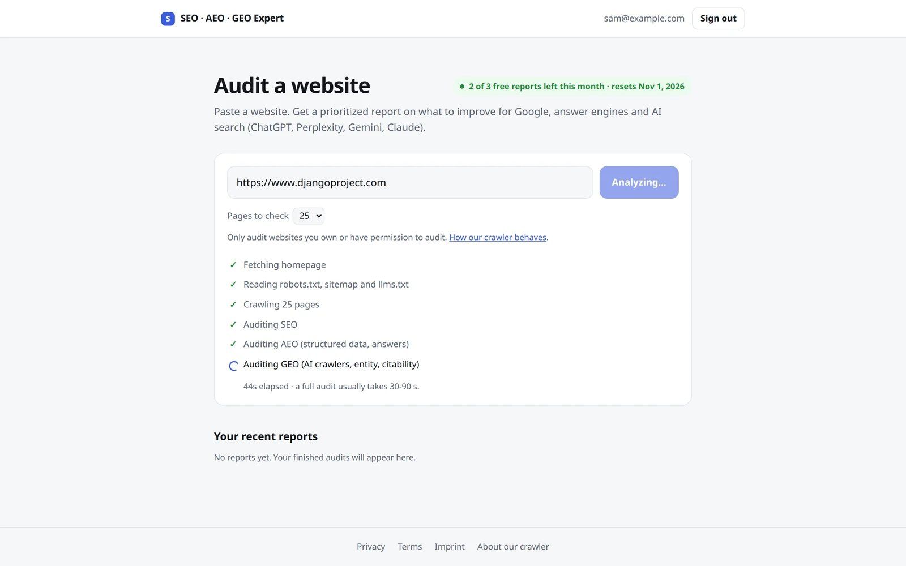
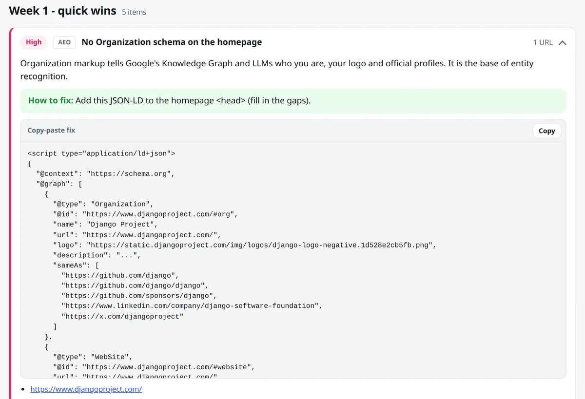
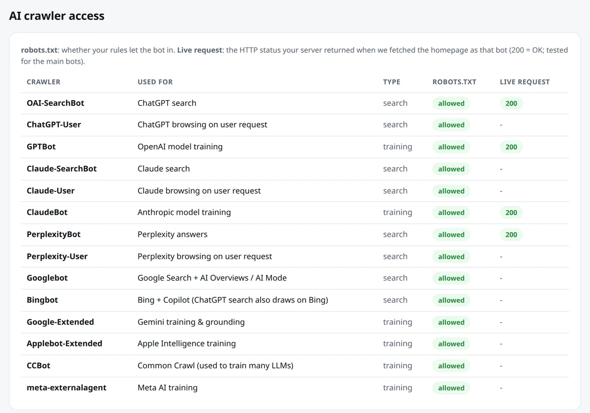

المشكلة
لم يعد الناس يبحثون في جوجل وحدها. صاروا يسألون ChatGPT و Perplexity أو إجابات جوجل بالذكاء الاصطناعي، وهذه الأدوات تقتبس من مواقع وتتجاهل أخرى. ومعظم أدوات الفحص ما زالت تفحص لجوجل فقط، والجيّد منها مدفوع.
أردت تقريرًا مجانيًا واحدًا يغطّي الثلاثة:
- SEO: هل تستطيع جوجل و Bing إيجاد الصفحات وقراءتها وترتيبها؟
- AEO (محركات الإجابة): هل المحتوى مبنيّ بحيث يستطيع محرك بحث انتزاع إجابة مباشرة منه؟
- GEO (البحث بالذكاء الاصطناعي): هل تستطيع أدوات الذكاء الاصطناعي الوصول إلى الموقع وفهم من يقف خلفه والاستشهاد به؟
ما تحصل عليه
< دقيقةلفحص 25 صفحة
3 درجاتSEO و AEO و GEO، مع درجة إجمالية
14زاحفًا للذكاء الاصطناعي: ChatGPT و Claude و Perplexity و Gemini وغيرها
0 €مصادر بيانات مجانية فقط؛ وخطوة الذكاء الاصطناعي اختيارية
- خطة على ثلاث مراحل: الأسبوع الأول مكاسب سريعة، ثم 30 يومًا، ثم 90 يومًا. الإصلاحات الأكبر والأرخص أولًا.
- كود جاهز لكل إصلاح: بيانات مهيكلة (JSON-LD)، وقواعد robots.txt، ومسودة llms.txt.
- التقرير كصفحة ويب وملف PDF وقائمة مهام بصيغة Markdown.


كيف يعمل
- زاحف بـ Python يقرأ الصفحة الرئيسية و robots.txt وخريطة الموقع وحتى 25 صفحة.
- فحوص قائمة على قواعد تعطي درجة لكل مجال. ولكل مشكلة أولوية وموضع في الخطة.
- يطلب التطبيق الصفحة الرئيسية بهوية كل زاحف ذكاء اصطناعي رئيسي، ليرى هل يسمح له الخادم بالدخول. فقد يسمح موقع لبوت في robots.txt ويحجبه عند الجدار الناري.
- قالب يحوّل النتائج إلى التقرير، و Chromium بلا واجهة يطبع ملف PDF.
المسار نفسه يعمل من سطر الأوامر. وهناك يستطيع خمسة وكلاء Claude Code المضيّ بالنتائج أبعد: مدقّق SEO، ومحلّل AEO، ومحلّل GEO، وباحث منافسين، وكاتب تقارير.

مبنيّ ليستخدمه الغرباء
كُتب التطبيق كما لو أن غرباء سيستخدمونه، لأن أداة تقبل أي عنوان من أي شخص تحتاج إلى حواجز:
- الدخول برابط يُرسَل بالبريد. فلا كلمات مرور تُخزَّن أو تُسرَّب.
- لكل مستخدم حصّة شهرية، وطلبات الدخول محدودة المعدّل.
- الزاحف يرفض العناوين الخاصة والداخلية، ويعيد الفحص بعد كل تحويل. فلا يستطيع مستخدم أن يجعل الخادم يجلب من شبكته هو.
- لا يمكن فحص موقع واحد مرارًا في اليوم نفسه، فيبقى الزاحف مؤدّبًا.
- الحاوية تعمل بمستخدم عادي مع إسقاط كل صلاحيات Linux. والمفاتيح في
.envخارج git. - اختبارات آلية تغطّي التحليل وقواعد robots وحارس العناوين وتسجيل الدخول والحصص. و GitHub Actions يشغّلها عند كل دفعة.
اختبار الذكاء الاصطناعي الاختياري
خطوة إضافية تسأل نموذجًا لغويًا الأسئلة التي يسألها المشتري، وتتحقّق هل يذكر الموقع أو يستشهد به. تعمل على خطة مجانية محدودة المعدّل، لذا فهي مُطفأة افتراضيًا وتُشغَّل بإعداد واحد.